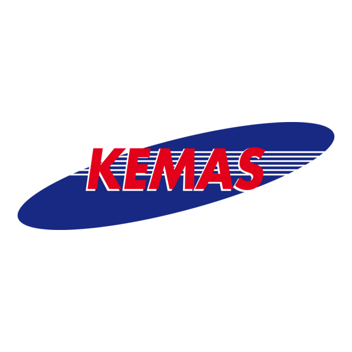
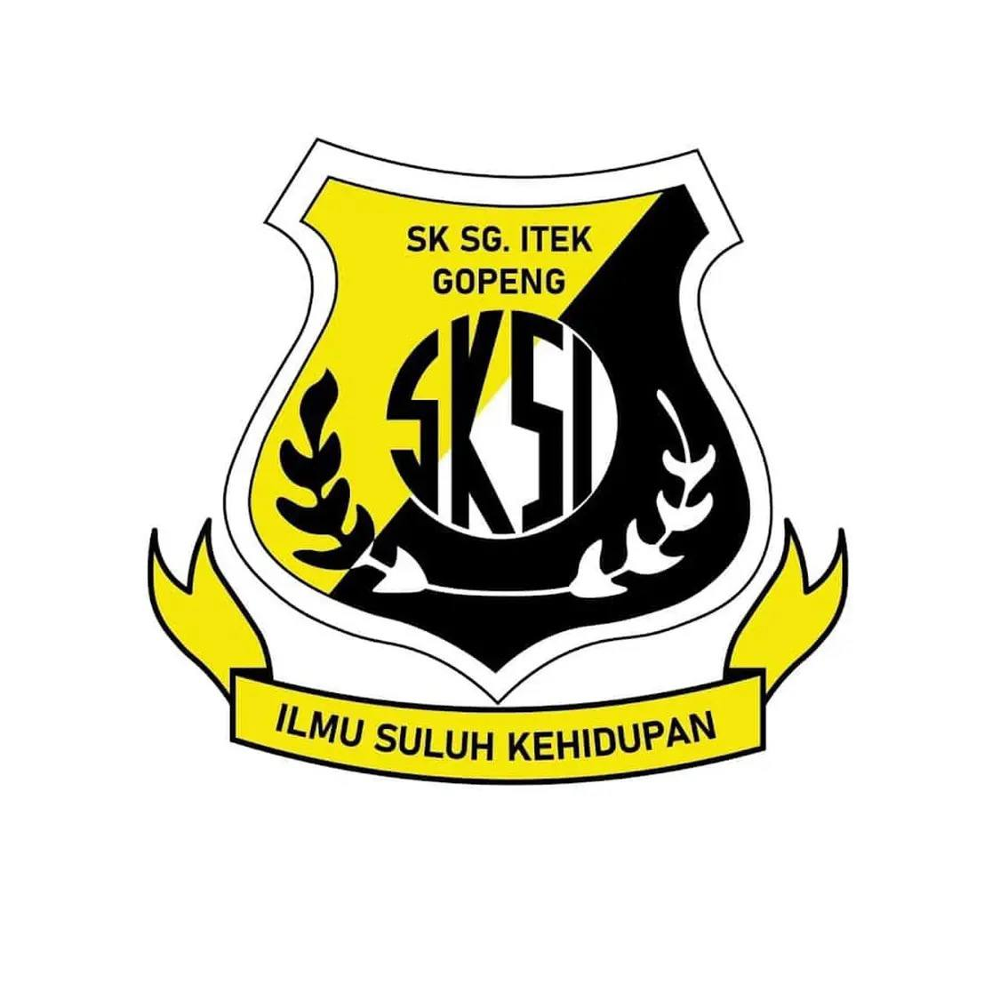
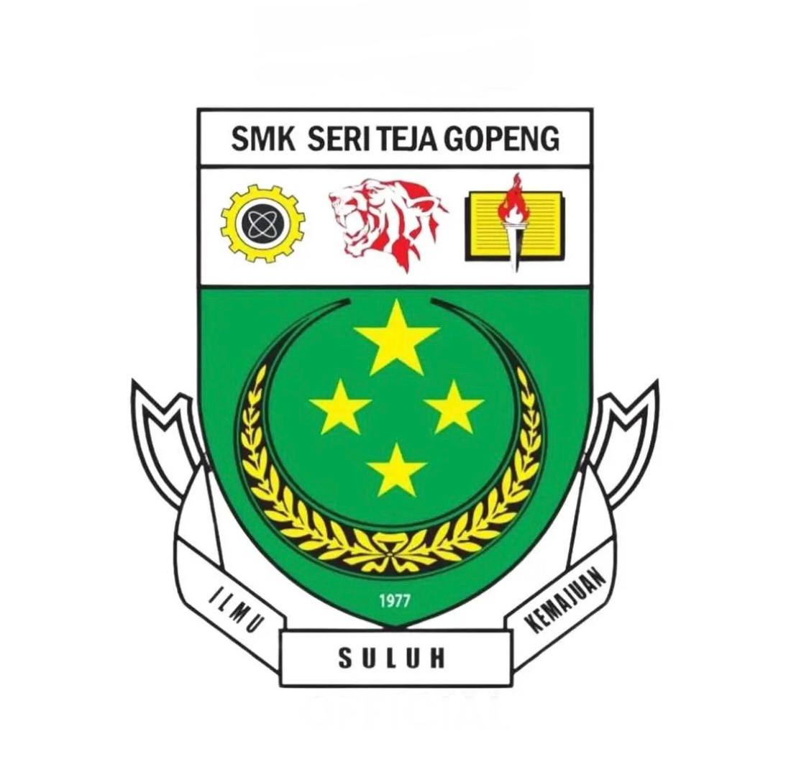

Welcome to My Education Background
| Level of Education | Institution | Details |
|---|---|---|
| Early Childhood |

Tadika Kemas Kampung Jelintoh
|
Began my educational journey by taking my first steps in learning, where I developed early cognitive and social skills, fostering curiosity and a love for knowledge that would guide my future studies.. |
| Primary Education |

Sekolah Kebangsaan Sungai Itek
|
Built a solid foundation in academics and personal development, mastering essential skills in literacy, numeracy, and communication, while cultivating discipline, teamwork, and a sense of responsibility. |
| Secondary Education |

Sekolah Menengah Kebangsaan Seri Teja
|
Completed my secondary education from Form 1 to Form 5, and pursued Form 6 to obtain the Sijil Tinggi Persekolahan Malaysia (STPM) at the same institution. This period strengthened my analytical thinking, problem-solving skills, and academic resilience. |
| Higher Education |
 Universiti Teknologi MARA (UiTM) Kedah
Universiti Teknologi MARA (UiTM) Kedah
|
Currently pursuing a Bachelor of Information Science (Honors) in Library Management at UiTM Kedah, specializing in information management and library services. I am developing advanced competencies in organizing, managing, and disseminating information efficiently, preparing me for a professional career in library and information science. |